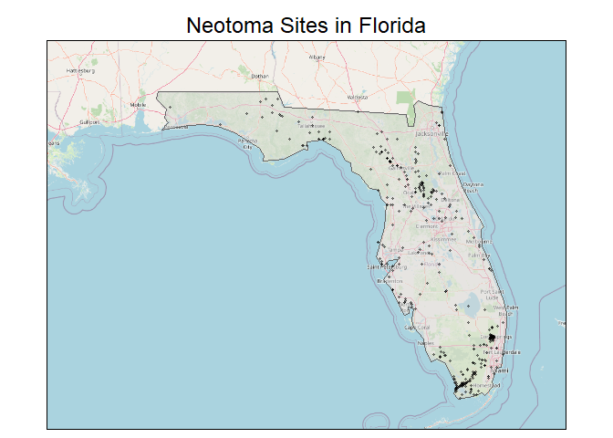
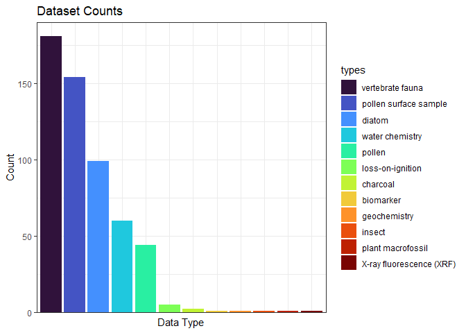
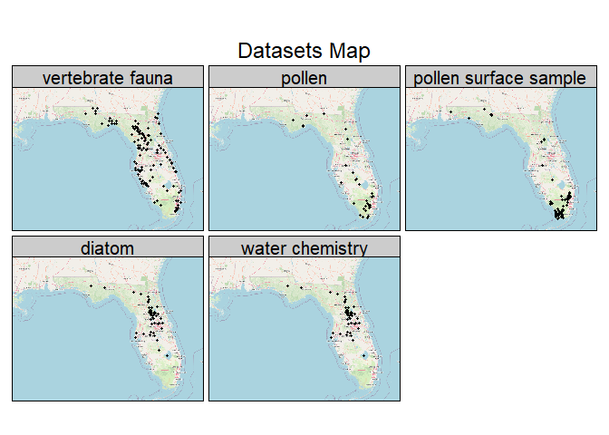
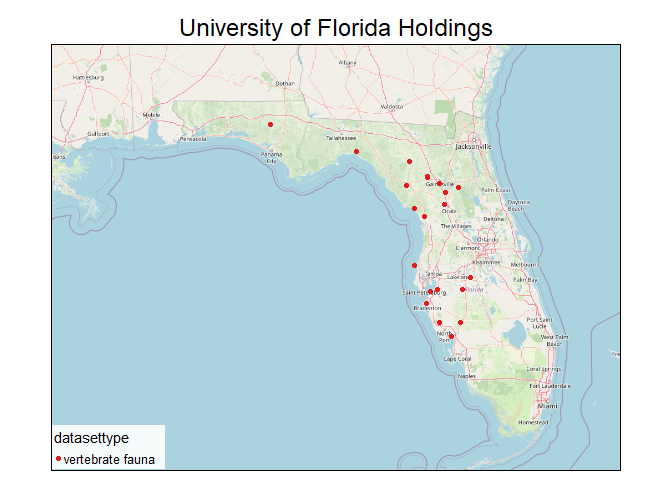
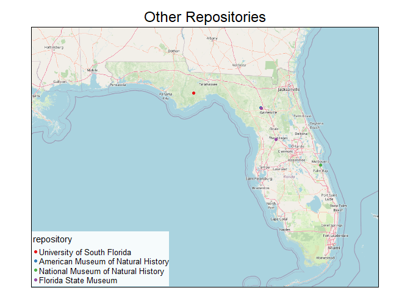
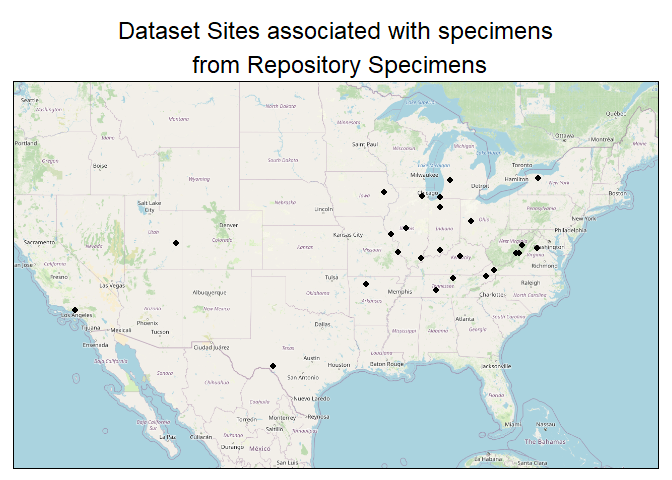
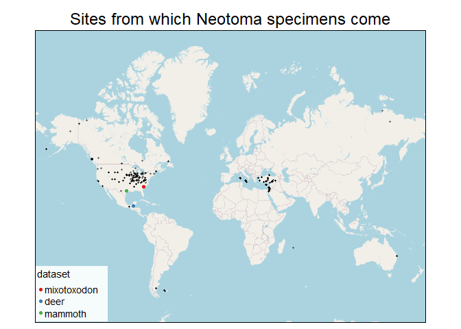

Neotoma’s Floridian Paleoecological Records
Nick Hoffman
September 21, 2023
Introduction
This page will use the R package Neotoma2 and the Neotoma API to briefly survey paleoecological records from the Florida region held by the Neotoma Paleoecology Database. If you would like to explore these records or other Neotoma data further, we are happy to help with that, so please reach out! This page was designed for use by scientists at the Seminole Tribe of Florida THPO.
About Neotoma
Neotoma began in 2009 as a federated database constituted by a set of more specialized paleoecological databases. This means that Neotoma brings together paleoecological data from a range of proxy types (e.g., pollen, charcoal, testate amoebae), regions (e.g., North America, Latin America, Europe), and time periods (e.g., Pliocene, Pleistocene, Holocene). Neotoma incorporates data collected over more than 150 years.
The Neotoma database is a relational database, a structure whose primary unit is the entity - essentially a table of data in which rows are observations, and columns are variables. Three important entities in Neotoma are sites, collection units, and datasets. A site is the place that fossil specimens come from, like a particular lake. A collection unit describes the means by which the material from a site was collected. It could be a particular sedimentary core from a lake site. A dataset might be the pollen you counted in the core at each stratigraphic horizon of the sedimentary core. There are other entities in the database too.
Are there any sites in Florida from which Neotoma records derive?
The first question to ask is whether Neotoma even stores any data from the Florida region.
As a matter of fact, there are 387 sites in Florida for which Neotoma holds paleoecological data. Some of these sites have multiple datasets associated with them, so there are even more than 387 data records.

Below is a table of all the site names and descriptions of the area
recorded by researchers who collected data from those sites.
What kinds of data were recorded at these sites?
Now we know there are data concerning Florida held by Neotoma. The next question we might want to answer is what kinds of data these are.

From the above table and bar graph, we can see that the most abundant datasets in Florida are vertebrate fauna.
Also abundant are:
- pollen surface samples,
- stratigraphic pollen (here labeled “pollen”: i.e., pollen sampled at different strata of a sedimentary core extracted from a lake),
- water chemistry data, and
- various kinds of diatom data.
Not abundant, but still interesting and potentially useful are:
- loss-on-ignition (i.e., how much of your mud can you burn away; a measure of reduced carbon content - potentially a proxy for eutrophication),
- sedimentary charcoal (for reconstructing fire history),
- X-ray fluorescence (for measuring trace elements),
- biomarkers (in this case, sedimentary concentrations of organic molecules used to reconstruct past temperature),
- geochemistry (in this case, trace metals in a sediment core measured mostly by ICP-MS),
- insects, and
- plant macrofossils.
The map below shows how these datasets are distributed.

We can notice some overlaps in site location across these map panels.
Most strikingly, the diatom and water chemistry maps look the same. Many paleoecologists use sedimentary diatom assemblages as proxies for reconstructing changes in lake chemistry over time. In order to estimate changes in lake chemistry over time based on changes in diatom assemblage over time, these scientists gather information on diatom assemblages at the surface of a lake and their relationship to modern lake chemistry. That is why these two dataset types are coextensive.
There are other overlaps too. It can be useful to have multiple proxies from the same site; their combination may paint a clearer picture of the past.
The Leaflet plots below enable dynamic exploration of maps for the most common dataset types: vertebrate fauna, diatoms, and pollen. Note that these are site maps. There are fewer sites than datasets because sometimes multiple datasets are collected from the same site, so the numbers here won’t match the dataset maps above. Also note that the pollen map below shows sites from which both stratigraphic and surface pollen records were collected.
Vertebrate Fauna Sites
Pollen Sites
Diatom Sites
Where, if anywhere, are the specimens held?
Strategy 1: Start from ‘Repository Specimens’ Table
My first strategy here is to get the full “repository specimens” table - a table with 6404 observations linking dataset ids to repository ids. I filter this table just for those datasets connected to sites in Florida. Using this strategy, I find that there are 159 datasets from sites in Florida linked to repositories.
The following table counts the number of datasets from Florida held by each relevant repository. Most of them are held by the Florida Museum of Natural History.
Below, I map the Florida sites from which datasets linked to repositories derive, and I color code them by dataset type.

All the specimens at the Florida Museum of Natural History are vertebrate fauna.

And the University of Florida, like its constituent museum, holds just vertebrate fauna.

The Academy of Natural Sciences in Philadelphia actually holds diatom specimens deriving from Florida. I was surprised to learn this. Apparently they belong to Drexel University’s Diatom Herbarium.
The smaller repositories all hold vertebrate fauna. The map below shows the sites from which these vertebrate datasets derive.

No Specimens here
When I do a Tilia call to find the specimen IDs associated with these datasets, none show up. There are no specimens listed for these datasets, even though the datasets are connected to repositories in the repository specimens table. My interpretation is that although Neotoma knows that the datasets contain specimens held by these repositories, it just doesn’t know anything in particular about these specimens.
To double check that there are really no specimens connected to these datasets, I grab the repository specimens and get all specimens associated with each dataset id through a Tilia call. Of the 6404 rows in repository specimens (representing 6255 distinct datasets because some datasets are linked to multiple repositories), only 112 distinct datasets (130 rows because multiple repositories) have specimens associated with them through the Tilia call. Of the 895 specimens connected to these 112 datasets, they are from 25 sites, none of which are in Florida. Even though none of these specimens are from sites in Florida, nine of them are held by the Florida Museum of Natural History. These nine specimen are deer teeth from Guatemala.


Strategy 2: Start with the specimens table
My second strategy is to grab the entire specimens table (3351 observations) and get the sample id, collection unit id, analysis unit id, and site id associated with each specimen, and to filter that table for sites from Florida. I find that there are no specimens from sites in Florida, of the 435 sites listed here. This is consistent with what I found above. Only 3 of the datasets actually associated with specimens are held at Florida Museum of Natural History. These three datasets have 13 specimens associated with them.
Even though these datasets are associated with specimens and associated with the Florida Museum of Natural History, for the two datasets that are not Joyanca deer teeth, these specimens are actually held in three other repositories: the Texas Memorial Museum, Lander University, and the South Carolina State Museum. This is because these datasets are linked to multiple repositories in the repository specimens table, and there is only information about the specimens held at the places that are not the Florida Museum of Natural History for those two other datasets.

One thing I’m realizing is that there are both specimens unconnected to repositories (2,456 out of 3,351), and datasets with connections to repositories that are unconnected to specimens (6,143 out of 6,255 distinct datasets in repository specimens).
Querying for Contact Information
If we needed to, we could use Neotoma to query for contact information associated with the researchers who collected data from any particular site. That gets a little involved, so we won’t show the process here. Let us know if you would like to learn how to do that!
Learning More
If you have any questions about the information presented here, if you would like to learn more about using Neotoma, or if you would like to join our Ethical Open Science Research Coordination Network for Past Global Change Data (EOS RCN), please reach out to Nick Hoffman at nicholashoffman@ucmerced.edu, or to the EOS RCN at EthicalOS.RCN@gmail.com.
Thank you for taking the time to read through this short presentation of Neotoma resources! We hope that it is helpful to you.